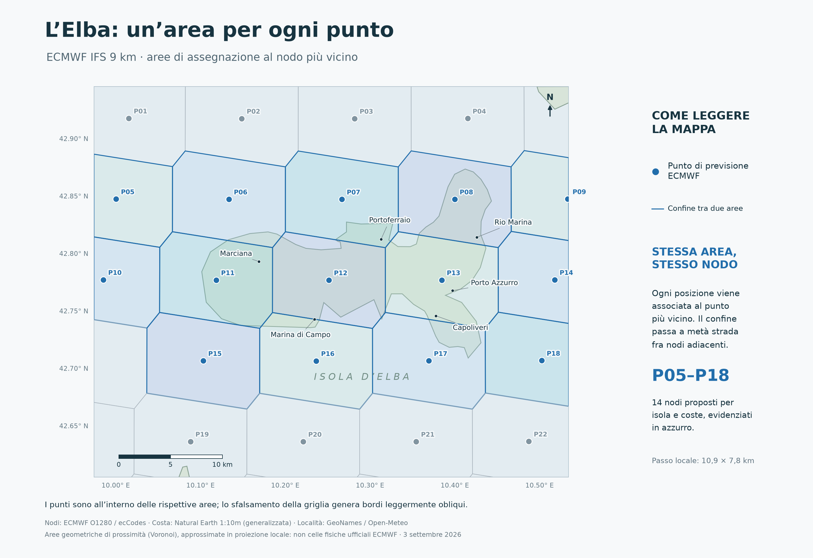

Vento sull’Isola d’Elba
Freccia: verso del moto · numero: km/h
Costa non esposta
Onshore nelle ultime 6 ore

▶ Riproduci
Velocità (km/h)
Raffica (km/h)
Prevedibilità ensemble (%)
Verso e componente nord/sud (km/h)